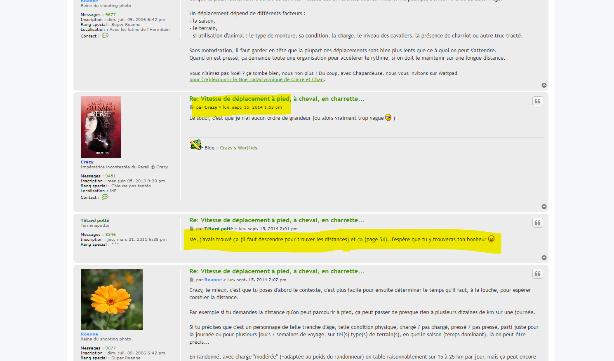

Is Twitter blue like these forums?
When we talk on internet platforms, we are teaching computers to learn how to help us not to be us.

In the early internet era forums were the places where you went when you had a question to ask, something special you want to know, or knowledge you want to validate. I thought that we have not leveraged enough algorithms to exploit this amount of clear and clean data and switched early to crowded social platforms auto-managed and auto-moderated by algorithms with more paths and possibilities for bots to act like they were real persons.
As an example of how past forums that were moderated by real persons were worth of knowledge please consider this image below

That’s this kind of behavior that I was interested early in connected people that help each other by the use of links. Built a system that tracked such kind of interaction and now this piece of knowledge is the most valuable one because without it you could not build a really smart AI.
Twitter is going to perform a massive account verification operation and launching a paid service. I think that all these key actions are about making Twitter a place of real person expressions of opinions rather than a place of marketing bots. By doing this Twitter will have more and more and more clean and useful data that can help build smarter AI and help us know better how we interact with each other.
Hope they will leverage this pivot for the benefit of the users not for the benefit of already established businesses that have millions of dollars that they can spend to reach us.
I am not the owner of Twitter, neither its CEO but I am glad that I also have such kind of data because I focused on past things like forums. Yes, forums hold useful pieces of data for AI was what I believed when I started working on this System.
Like I said in this article titled the next blogs, past blogs are the next things, you can also acknowledge that past forums are the next things.
Of course book dojo leveraged this technology to know how books are discussed, talked about and how this can benefit both book readers and publishers. If you want to be part of Book Dojo you can use this form.